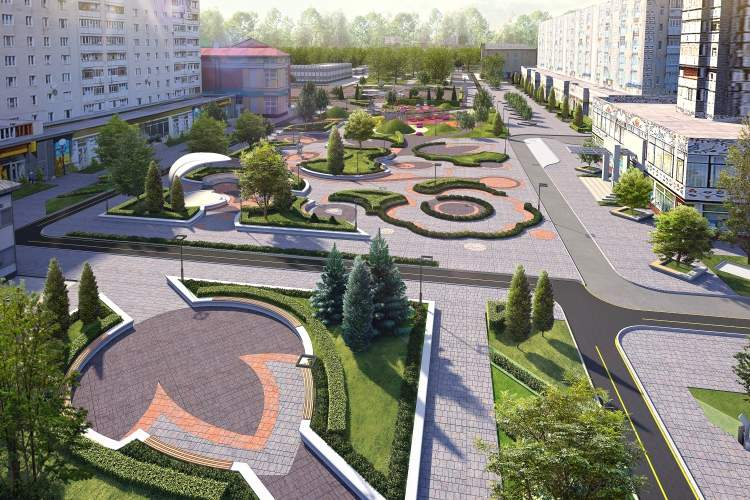
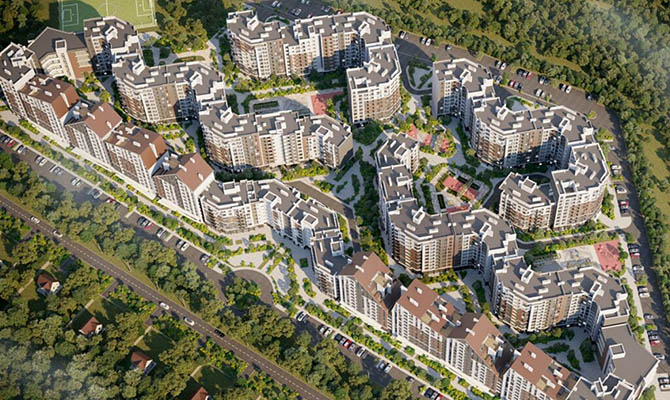
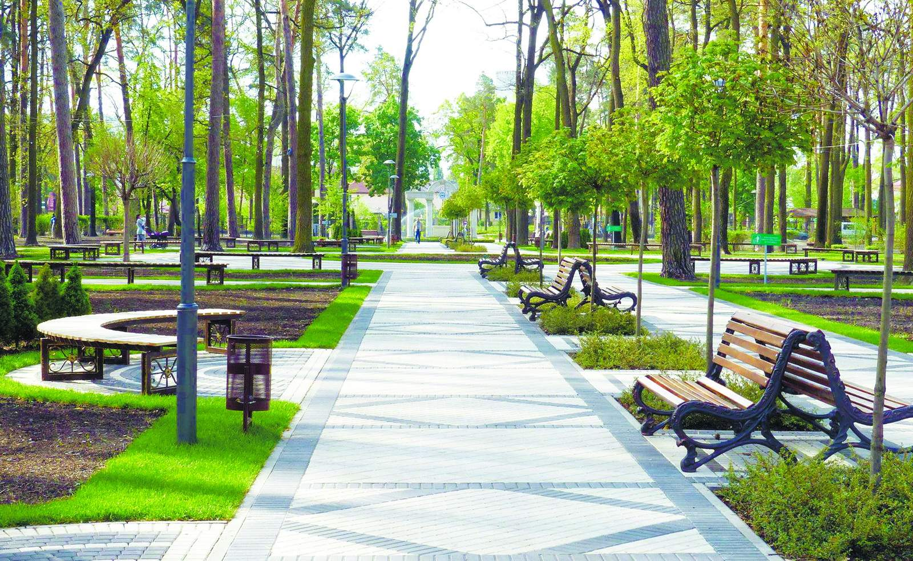
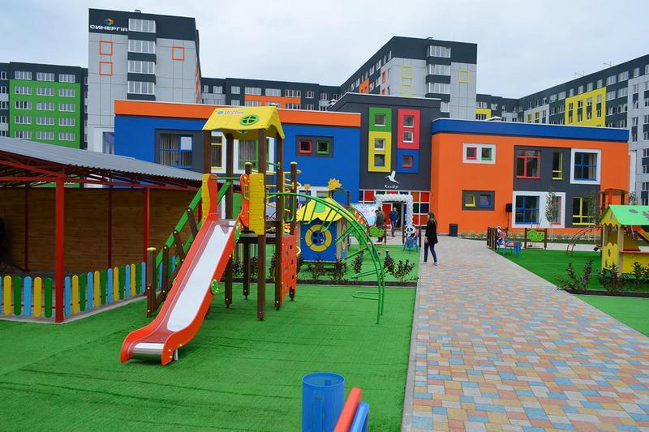
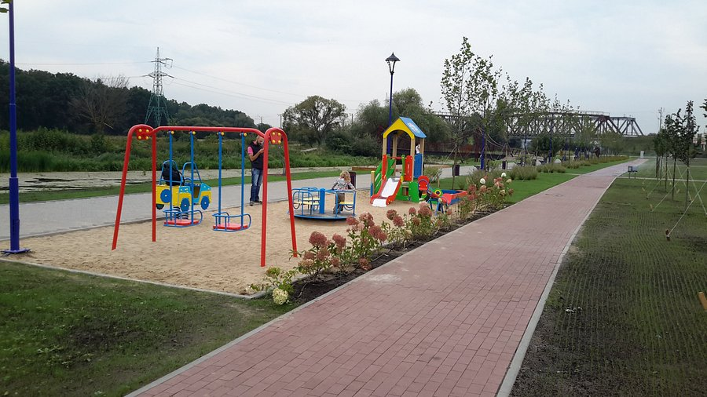
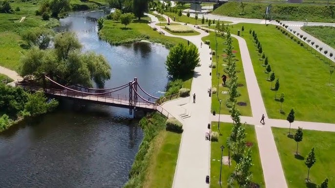

My town Irpin - photogallery
Irpin is a modern European city that is actively developing.
More than 70% of the buildings in the city are new and built in the last 30 years.


Irpin has the largest number of parks and children's recreation areas in the Kyiv region.
The majority of the population of Irpin is young people and many children.
Recreation areas are located within a 15-minute walk from each other.


One of the most popular places to relax is the river near the city. Every weekend, hundreds of Irpin residents spend their time here.


|
Go to Main page >>> |